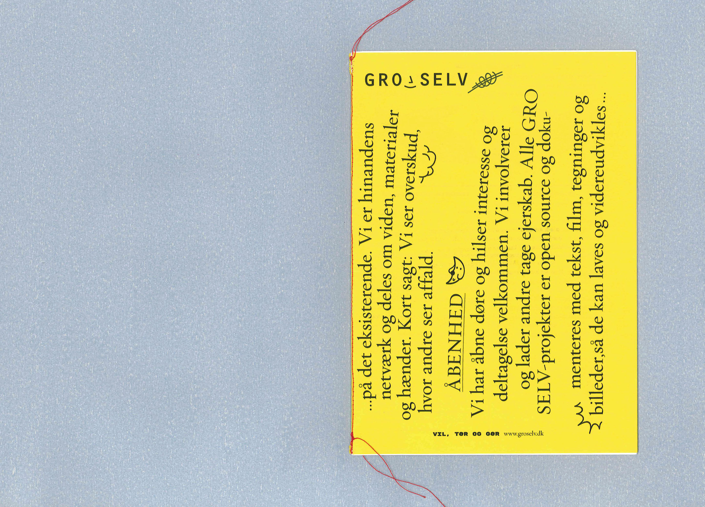
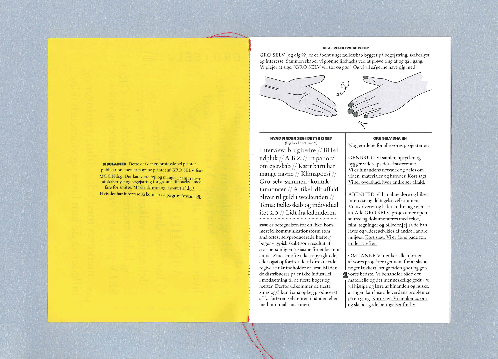
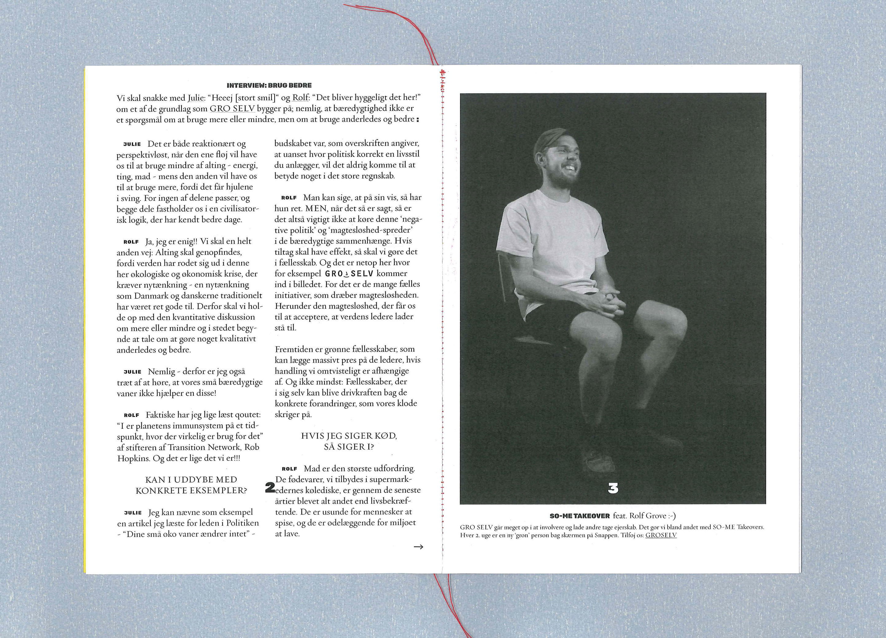
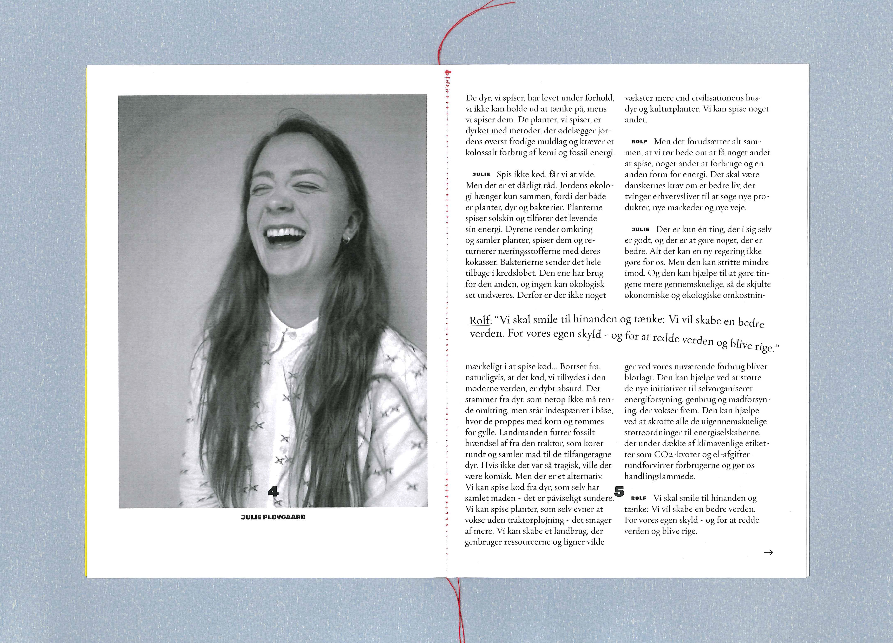
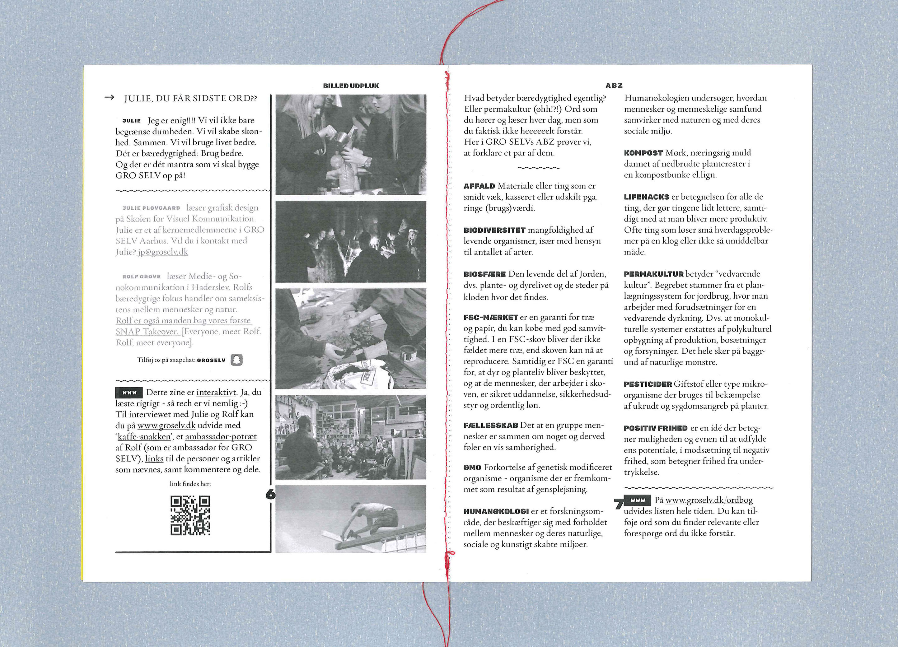
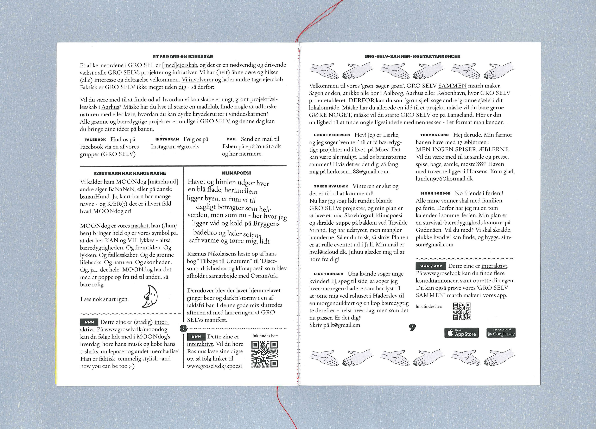
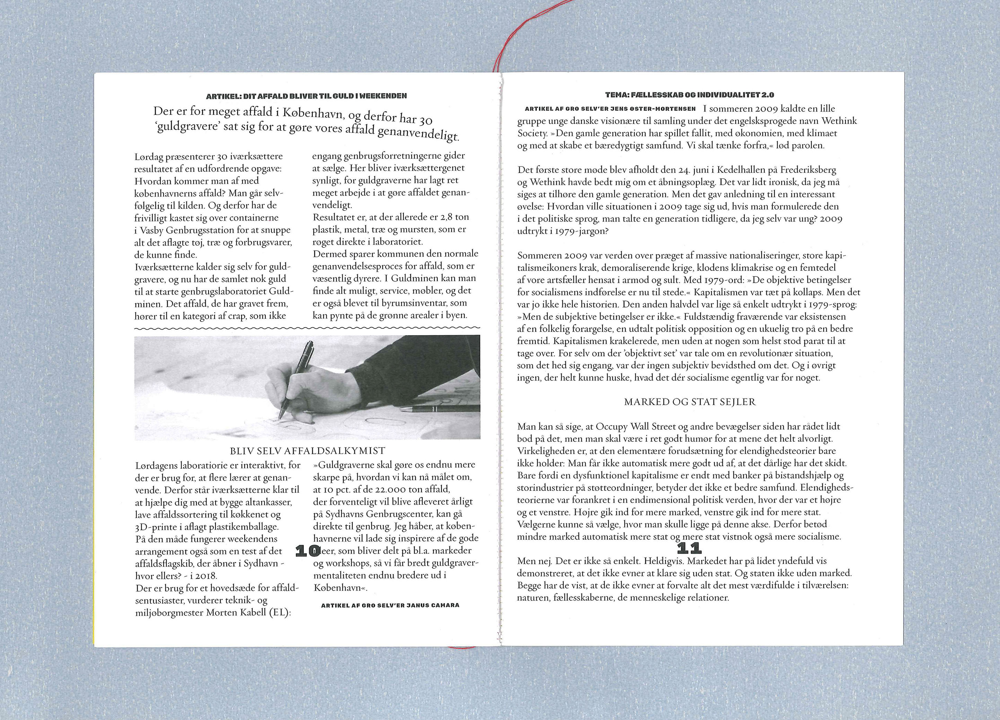
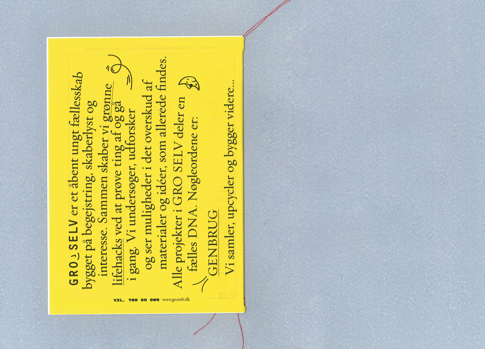
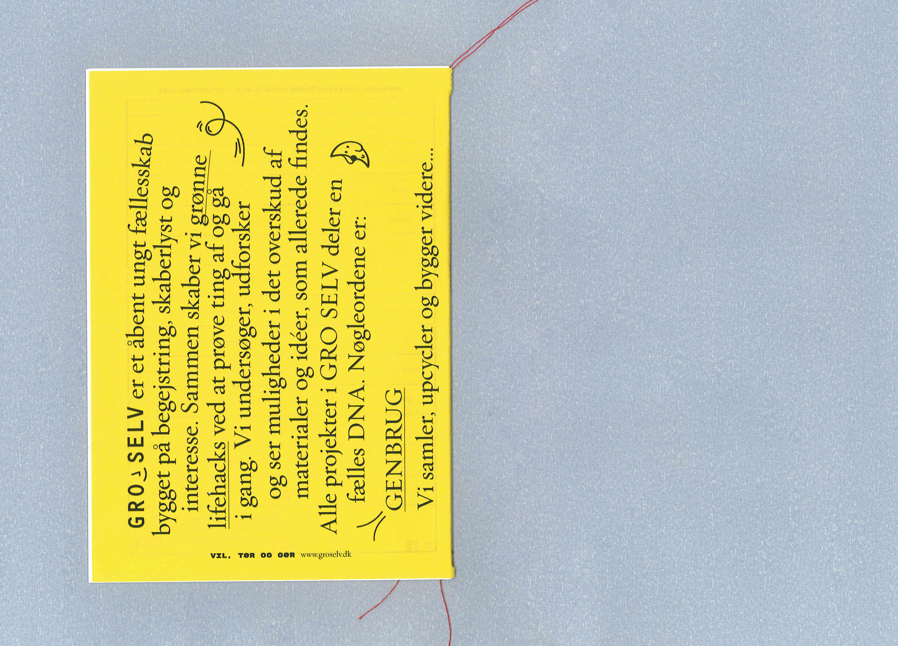

GRO SELV
GRO SELV [Grow (it) yourself] uses collaborative making to inspire young people to realize sustainable projects within the scope of their own life. It’s a project by young people for young people. To reach future GRO SELV makers, self-publication of a monthly zine – prepared, written, drawn and photographed by the GRO SELV teams – was to help spread the news.
Keywords cheap, economical (fit most possible on the pages) and 'eye level' set the framework for the design – inviting and inciting – defined by the makers themselves.
      
 
